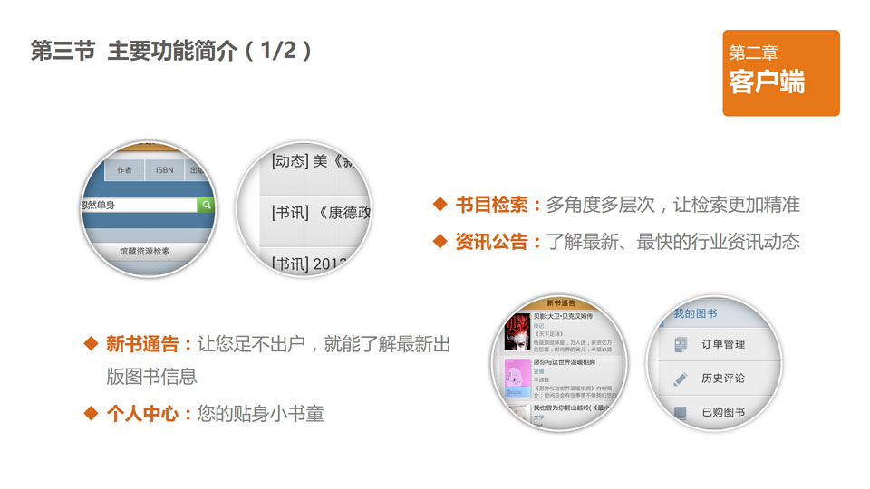
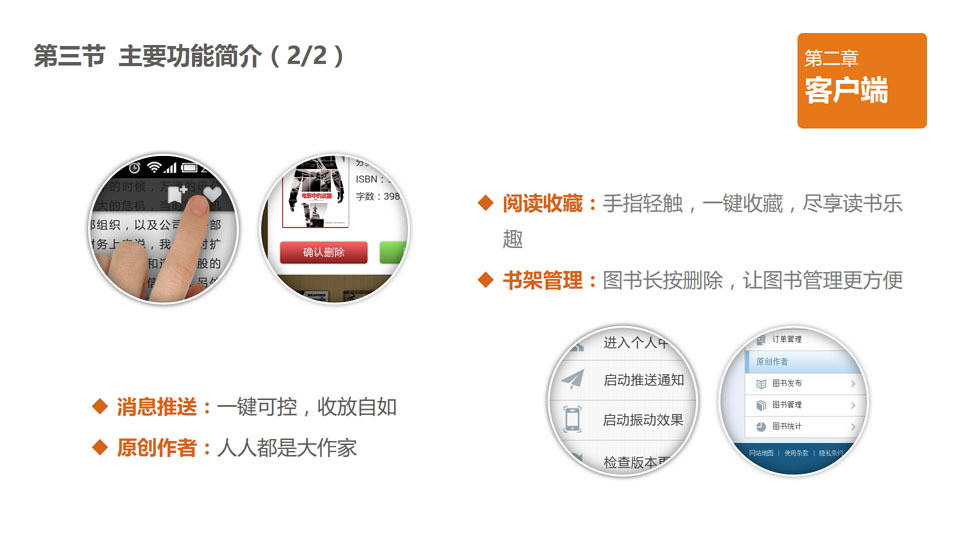
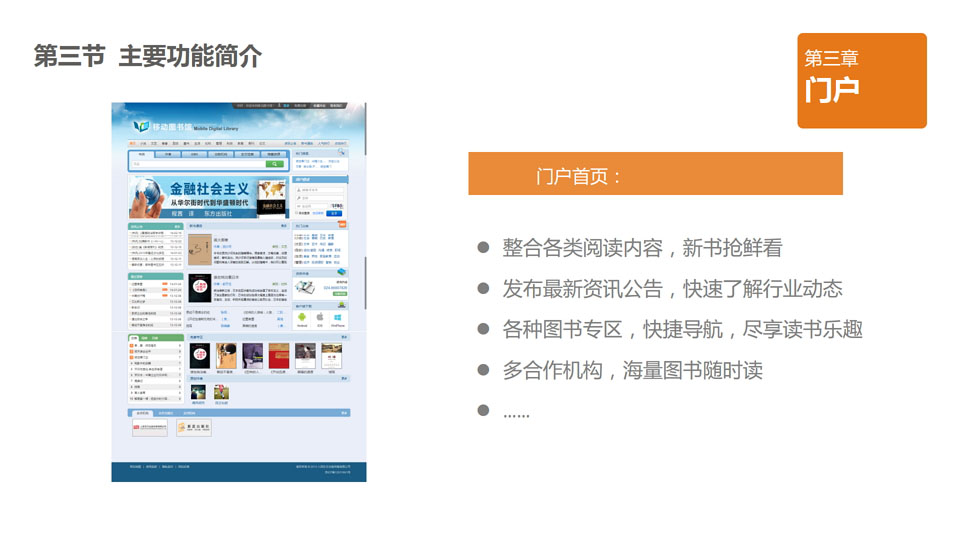
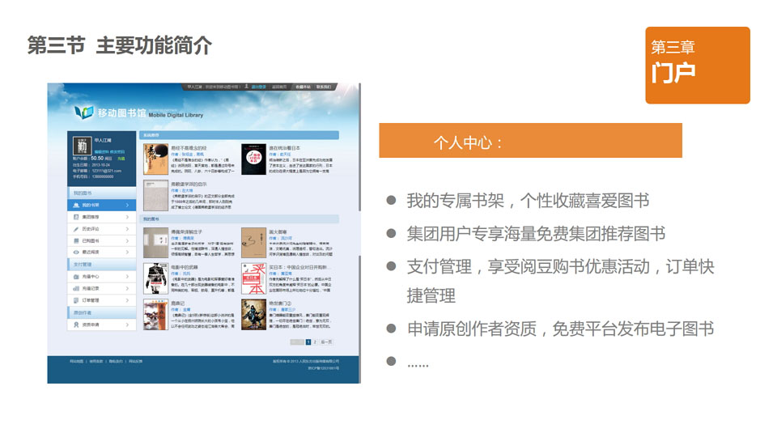
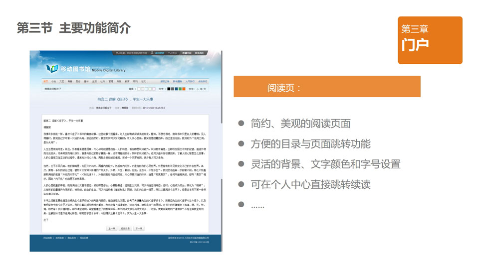
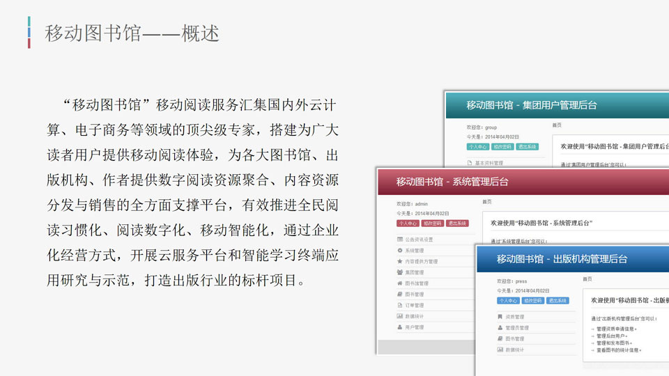
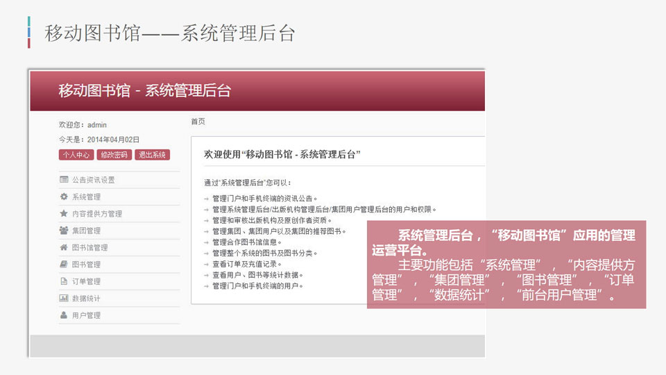

我们的在线阅读解决方案包括门户网站、管理后台、以及手机客户端，涵盖在线阅读的各方面功能，并且可以根据定制需求进行裁剪和功能扩展。
手机客户端基于跨平台架构设计，系统及硬件相关逻辑与业务逻辑分离，最大程度的复用上层核心业务逻辑功能。支持iOS、Android、Windows Phone等平台，包括了常规的书目检索、资讯公告、新书通告、个人中心、阅读收藏、书架管理、消息推送、原创作者等核心功能
 门户网站支持IE，Chrome，Firefox，360等主流浏览器、兼容多种内核。采用灵活、智能的布局方式、不同引擎渲染效果同一化、不同浏览器对服务器统一功能接口。包括首页、分类、排行、推荐、专栏等通用功能，以及书架、评论、购买、充值、原创作者等个人中心功能。
  管理后台使用先进的模板，简洁、统一的风格设计。包含对门户网站以及手机客户端各项功能配置，图书发布、审核，用户管理，订单管理，以及强大的数据统计功能。
 